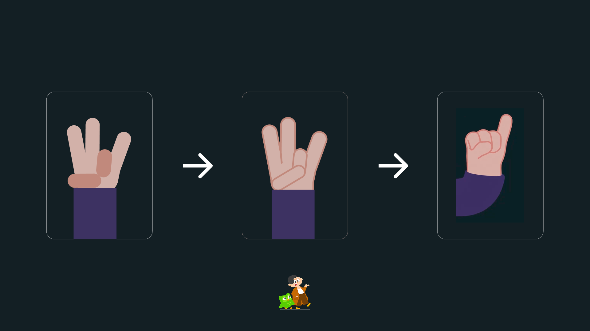

Deliverables
Concept Development
Interactive design
Vibe Coding
Prototype Production
The brief
Duolingo dominates spoken-language learning with playful, gamified fluency for millions. But there’s
a massive blind spot: nonverbal languages. If accessibility is truly the mission, this gap can’t
stay ignored.
Duolingo ASL challenges the platform to expand beyond speech. 1.5B people worldwide
experiencing hearing loss and 430M with
disabling hearing loss, this isn’t edge-case
accessibility—it’s a global, untapped market.

The solution
This project proves how nonverbal languages can live inside Duolingo’s ecosystem—at scale.
They have the tech. I bring the pressure.
ASL belongs in the core of Duolingo—not on the edge.

With Rive, motion design, AI, and ASL linguistics in the pipeline, Duolingo has the foundation for a
new accessibility-driven character system. This proof of concept explores how that future could work
at scale.

Figuring Out What’s Best for the Project
Challenge:
The toughest part was balancing Duolingo’s brand guidelines with the accessibility needs of ASL. The
brand book encourages expressive, exaggerated hand shapes — but for ASL, clarity often comes from
simplifying the form, not adding more detail.
Solution
I iterated on the hand designs to respect the brand while optimizing for readability and accessibility,
ensuring that each sign is immediately understandable for learners.

Problem:
Keyframing every letter in ASL by hand is extremely time-consuming.
Solution:
Used vibe coding to bridge Python with Blender 3D, auto-rigging letters and generating keyframes,
saving hours of production time and letting me focus on meaningful problem-solving.
Results
High Social Validation
This Duolingo ASL concept generated a huge response on LinkedIn—thousands of people expressing that
they want this to become a real feature.
• 8k+ reactions
• 149 reposts
• 243 comments
Reflections
Growth Opportunities
As a UX designer, this project pushed me beyond UI and into business strategy. Inclusive
design isn’t just morally essential—it can also drive revenue and long-term retention.
This case study helped me understand how Duolingo could introduce ASL as a sustainable
new stream without compromising the existing learning experience.
Passion + Dedication = Results
Through strong community interest and research, this project proved that a well-crafted
creative brief can lead to long-term impact—not just a one-off concept.